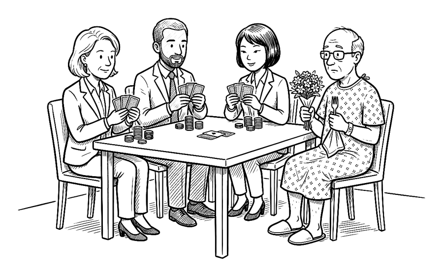
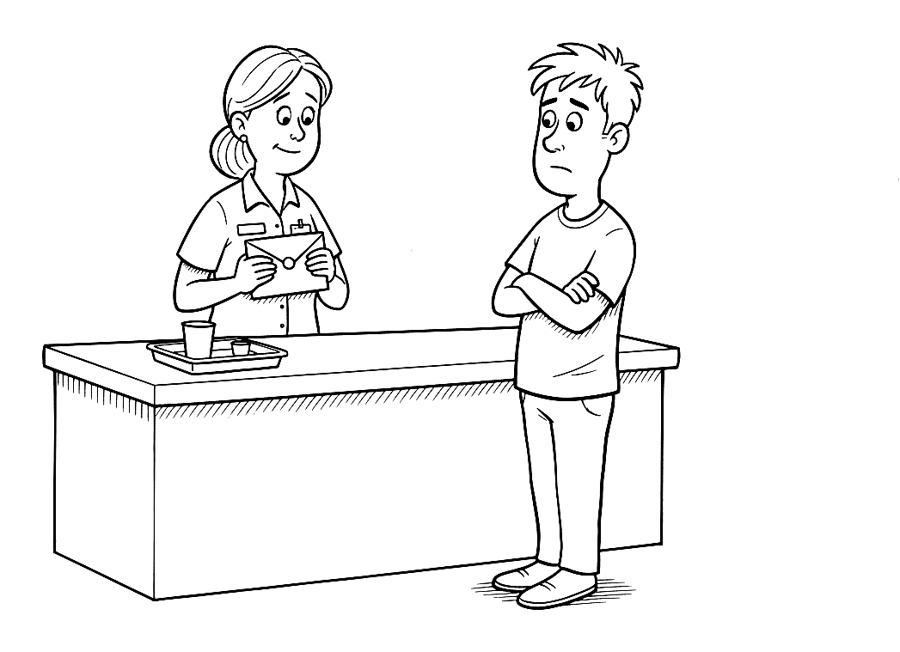
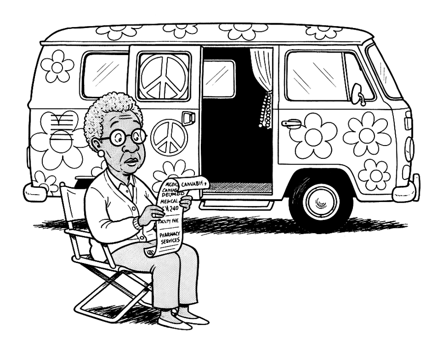
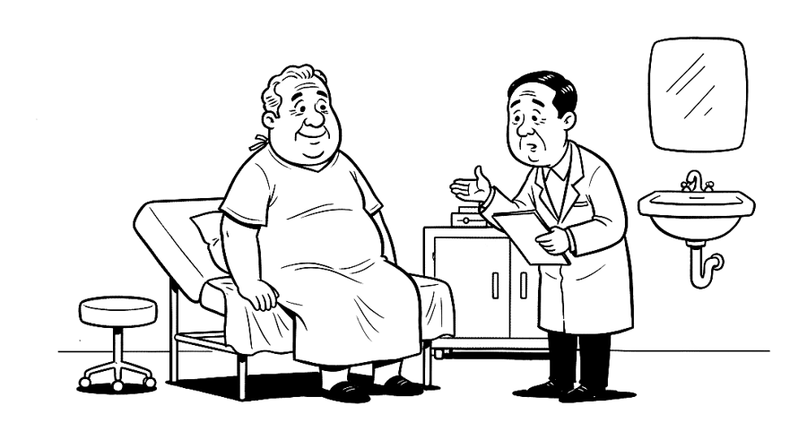

You have a part to play in your own care. Scripts included.
On Amazon:KindlePaperbackFree to read with Kindle Unlimited.
No one ever showed you how to use health care. You hear that the emergency room is the wrong place to go, but not what the right place is. A doctor may ask what you'd like to do. That doctor trained for a dozen years before being allowed to ask, and you get a few moments to answer.
Part of health care is the people who look after you, and they mostly want what you want. The other part is an industry, and it spends a lot of money on people you'll never meet: a reviewer who rules on whether your care was necessary, a coder who settles what kind of visit you had, a collector who picks how many more times to ask. That side employs a revenue maximizer. Who's your cost minimizer? The book shows you how to handle the people making those decisions, and how to get the most from the people treating you while doing right by them.

“I'm all in.”
You have more rights than you use. The book gathers them, explains the signs that something's off, and supplies what to say next, whether you're talking to a doctor, a billing office, an insurer or a pharmacist. Usually nothing is off, and it tells you that as well.
Eight things from the book
Here are eight findings, shortened, each with a sentence you can use. The sources, the exceptions, and the next move if the first sentence fails are in the book.
1Don't pay the first bill.
Hospital bills start out as totals. Before you pay, get the line-by-line version and wait for your insurer's explanation of benefits. In a national survey, about three in four people who called about a bill they believed was wrong got it corrected, and 86 percent of those who never called figured it wouldn't help.
Say this“I got the bill for [date]. Before any payment, I need to see the itemized statement with procedure codes, along with your financial assistance policy and application.”
In the book: Chapter 3, The Bill After, and the Debt
2Nonprofit hospitals have to offer a discount.
Every nonprofit hospital has a written policy for lowering bills for patients who can't pay, and the application window runs 240 days from the first bill. Only about three in ten of the patients it's meant for end up getting it, and half say nobody at the hospital mentioned it.
In the book: Chapter 3, The Bill After, and the Debt

“Before we go over the bill, can you confirm that you're taking something for anxiety?”
3A denial is a first offer.
In 2024, Medicare Advantage plans denied about four million requests for care. Only about one in nine denials was appealed, and 80.7 percent of those appeals succeeded in full or in part. Your appeal starts by asking for the file behind the decision.
Say this“Citing 29 CFR 2560.503-1, I'm asking for these free of charge: the whole claim file, the exact clinical criteria or guideline behind the decision, the clinical reasoning, and the name and specialty of each medical professional you consulted.”
In the book: Chapter 28, No: Who Decides, and How to Appeal
4Your chart is yours, in thirty days.
Federal law gives you the right to your entire record, electronically, within thirty days, for no more than the cost of copying. Test results now land in your portal before your doctor has seen them.
Say this“Under the HIPAA right of access, please send me my complete designated record set electronically within thirty days.”
In the book: Chapter 8, Your Records Are Yours

“My dealer never charged a facility fee.”
5Ask for risk in people, not percentages.
Say a drug takes your risk from 3 in 100 down to 2 in 100. That's a one-third cut, which sounds big. It also means a hundred people take the drug so that one benefits. Both statements are accurate, but only the second tells you what you're choosing.
Say this“Picture a hundred people like me. Without the treatment, how many have this happen? With it, how many? Over how many years? How many get the side effect?”
In the book: Chapter 12, Risk in Plain Numbers
6Doctors' estimates of time left run long.
When doctors predicted how long hospice patients would live, 63 of every 100 predictions were too hopeful and 17 were too gloomy. Across all of them, the guess averaged about five times too long. Ask for a range instead of a single number.
Say this“For someone in my situation, what's the likeliest outcome, and what are the best and worst cases?”
In the book: Chapter 13, How Long Have I Got?

“Actually, that is my second opinion. When you first came in I thought you had gout.”
7“Your insurance won't pay if you leave” is a myth.
At one teaching hospital, seven in ten residents believed insurers won't pay when a patient leaves against medical advice, and most of those who'd told patients so said it to keep them there. Ten years of the hospital's billing records turned up no payment refused for that reason.
In the book: Chapter 20, Getting Out, and Getting Better at Home
8A salesperson is usually in the operating room.
When a device is implanted, someone from the manufacturer is often present. Shoulder surgeons, asked to estimate, put it at about four cases in five. The rep's pay depends on what gets used. No state requires your consent to the rep's presence, but you can still refuse.
Say this“Please chart that I want the device representative kept out of the sterile field.”
Letters to copy as plain text: records requests, itemized bills, financial assistance, appeals and external review, debt validation, checks before a planned procedure, and four advance directives.
Chatbot prompts to paste, starting with one that gets a chatbot to keep your health file, draft records requests, check your network and set reminders.
Anything the book gets wrong, as it's found, and what changed.
What's inside
Your Part to Play
1The Biggest Purchase You Never PricedWhat you're really spending on health care, the helpers you've already paid for, and what to ask before you agree to any treatment.
2Simple Things That Will Extend Your LifeTen small chores you can finish in minutes that earn their keep the day something goes wrong, plus inexpensive habits and checks already known to add years.
3The Bill After, and the DebtReading a hospital bill, getting it reduced or wiped out, and handling collectors, lawsuits and medical debt.
4The Manners, and When to Break ThemStaying kind to the person in front of you while pressing the institution behind them, and asking in a way that gets results.
The Doctor and the Visit
5Which Door: From Telehealth to the ERChoosing among 911, the ER, urgent care and telehealth, what each costs, and what to say once you're in the ER waiting room.
6A Doctor of Your OwnFinding a doctor of your own, getting an earlier appointment, looking up their record, and moving on if it doesn't work out.
7The VisitPreparing for an appointment, spending its few minutes on what matters most, and keeping track of what you were told.
8Your Records Are YoursGetting your full chart in thirty days for the cost of copying, fixing its errors, and taking your history with you to a new doctor.
9Dr. Google, Dr. ChatbotGetting more out of search engines and chatbots: what background to supply, what to ask, and how to protect your privacy.
10Bringing BackupWho should come with you, recording an appointment, the forms to sign before you need them, and whose side a paid helper is on.
Decisions
11What Else Could This Be?Three questions that stop a diagnosis from closing too soon, following up on test results, and when to seek a second opinion.
12Risk in Plain NumbersRestating any risk as people out of a hundred, comparing it with everyday risks, and catching numbers that are less exact than they look.
13How Long Have I Got?Asking about a prognosis as a range of outcomes, why your odds can improve over time, and why doctors tend to overestimate time left.
14The Test You May Not NeedJudging a screening test by its benefits and harms, what a "probably benign" result means numerically, and handling something a scan turned up by chance.
15Before You Say YesLaying out all your choices, including no treatment, the questions to ask before you consent, and what to expect from a clinical trial.
16What the Other Side Is Paid ForLooking up industry payments to your doctor and what your doctor owns, and how much weight to give what you find.
Surgery and the Hospital
17Before the OperationPicking a surgeon and hospital, and what to sort out ahead of time: your medicines, who does the operating, the device rep, pain control and blood clots.
18The First Day in HospitalThe forms you're handed at admission, the difference between admitted and under observation, and who's actually running your care.
19Staying Safe in the HospitalProtecting yourself during a stay: verifying each drug, knowing your team, getting help fast, and keeping your strength up.
20Getting Out, and Getting Better at HomeGoing home with your prescriptions, a care plan and someone to call, and appealing a Medicare discharge you think is too soon.
21When Something Goes WrongThe first week after a medical error or bad outcome: securing the chart, keeping notes, asking for a meeting and minding the deadlines.
Living With It
22Your Medicines, SafelyKeeping a single list, bringing in all your bottles, the riskiest drugs, checks before taking anything over the counter, and what to do about fevers.
23A Serious Diagnosis, and the Long HaulThe fourteen days after bad news, then the long haul with a chronic condition: second reads, biomarkers, tumor boards, one keeper of the list, and kidney tests.
24Who Gets BelievedWhy some patients are taken seriously and others aren't, what men give up by avoiding care, and four moves that work for anyone.
25Pain, Addiction and the MindHow you look from the prescriber's side, what the opioid guideline asks of a prescriber and what it leaves open, and finding mental-health care in a thin network: parity law, 988 and picking a therapist.
26Pregnancy, Birth and Your KidsWhere to deliver, help during labor, getting the baby on your plan, your own recovery over the year after, then less painful shots for a child, home medicines, anesthesia, school, and the paperwork at eighteen.
27Your Parents, and the EndLooking after a parent and preparing for death: documents to sign while you still can, hospital stays, the gaps in Medicare, what CPR really does, hospice, and funeral pricing.
The Money
28No: Who Decides, and How to AppealWho makes coverage decisions, the six steps of an appeal, and why most appeals get at least part of what they ask for.
29The Price BeforeFinding out the cost ahead of time: billing codes, cash prices, facility fees and getting an estimate in writing.
30Drugs for LessCutting your prescription costs with cash prices, older drugs and coupons, and what your pharmacist can do for you.
31Things You've Already Paid ForNo-cost preventive care, the add-on benefits your employer pays for, and making use of the months after you reach your out-of-pocket maximum.
32Getting SeenYour options when a provider directory is out of date, the wait runs long, a surprise bill shows up, or your doctor goes out of network.
33Your Plan: Which Rulebook, and Choosing Next Year'sThe nine sets of rules your coverage might fall under, and a simple subtraction for picking next year's plan.
34Between Plans, On Your Own, and at Sixty-FiveChanging coverage: COBRA, marketplace plans, Medicaid's retroactive coverage, and Medicare choices you can't easily reverse.
Why It's This Way
35Where the Money GoesFollowing the dollars: who's profiting, and what one patient can do about it.
36How Everyone Else Does It, and What to Ask ForWhat other wealthy countries gain and give up by trading bills for waits, and how patients can change the rules here.
Ten appendices cover your rights in full, twelve letters, advance directives and pre-procedure checks, chatbot prompts, a glossary, where to turn for help, the papers you'll be handed, step-by-step instructions, questions for an employer's plan, and how the book was made.
Is it for you?
Probably, if
You've paid a medical bill you didn't read, or nodded at a doctor and never asked what they meant. An insurer told you no and you accepted it. You're about to turn 65, expecting a baby, living with a diagnosis, or looking after someone who is. Or you're healthy, insured, paying for it, and getting little use from it.
Probably not, if
You want someone to tell you which treatment to choose. The book explains the evidence and doesn't pick for you. You want an argument for or against a health system. It deals with the system you're stuck with today. You want a villain. There isn't one here.